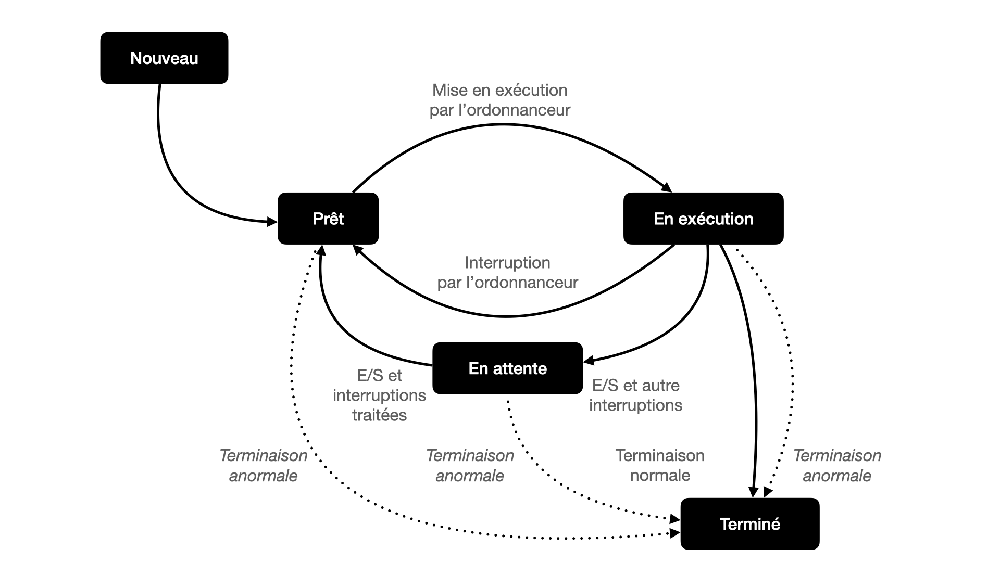

L’objectif de ce document est d’essayer de faire comprendre les idées mises en œuvre lors de l’écriture des système d’exploitation afin qu'un nombre de programmes plus important que le nombre de processeurs puisse fonctionner « simultanément ».
L’ordonnanceur
Rappel sur l’exécution d’un programme
-
Un programme est un fichier contenant une suite d’instructions écrites en langage machine. C’est une suite d’octets que le processeur que le processeur est capable de décoder et d’exécuter.
-
Actions du système d’exploitation au lancement d’un programme :
- Le contenu du fichier contenant le programme est copié dans la mémoire vive (RAM), à une certaine adresse $a$.
- Le système d’exploitation écrit l’adresse $a$ dans le registre IP (instruction pointer).
-
Au cycle d’horloge du processeur suivant, ce dernier lit l’instruction qui se trouve dans le registre IP et l’exécute. Par la suite, il exécute la deuxième instruction puis les suivantes.
- Remarque
- L’exécution d’une instruction par le processeur se décompose en en plusieurs sous-étapes : le chargement (récupération de l’instruction en mémoire), le décodage (quelle action est codée par la suite d’octets) et l'exécution.
Interruptions
La description précédente est correcte mais incomplète : elle laisse penser qu’une fois un programme lancé le processeur se focalise sur son exécution, au détriment de l’exécution de tout autre programme.
Il existe plusieurs types d’interruptions :
-
les interruptions générées par le matériel (un disque dur signale qu’il a fini d’écrire un octet, une carte réseau signale qu’une trame vient d’arriver, …)
-
les interruptions d’horloges générées par le processeur (historiquement toutes les $\pu{55 ms}$, toutes les $\pu{100 ns}$ de nos jours).
Lorsqu’un processeur reçoit une interruption il interrompt son exécution à la fin de l’instruction courante et exécute un programme se trouvant à une adresse prédéfinie.
Ce programme, le gestionnaire d’interruption, reçoit une copie des valeurs courante des registres, ainsi qu’un code numérique lui permettant de savoir quel est le type de l’interruption qui a stoppé le processeur.
On utilise les interruptions, principalement dans deux buts :
-
permettre des communications non bloquantes avec des périphériques externes ;
-
commuter entre les tâches dans un ordonnanceur.
Les interruptions constituent le fondement de l’exécution concurrente des programmes.
Vocabulaire
- Exécutable
- Fichier binaire contenant des instructions en langage machine directement exécutables par le processeur de la machine.
- Processus
- Instance du programme en cours d’exécution. Un système d’exploitation identifie généralement les processus par un numéro unique.
Un processus est décrit par :
-
L'ensemble de la mémoire allouée par le système d’exploitation pour l’exécution du programme (instructions codées et données manipulées, qu’elles soient contenues dans la pile ou sur le tas) ;
-
L'ensemble des ressources utilisées par le programme (fichiers ouverts, connexions réseau, etc.) ;
-
Les valeurs stockées dans tous les registres du processeur.
- Thread ou tâche
- Éxécution d’une suite d’instructions démarrée par un processus. Deux processus sont l’exécution de deux programmes différents (traitement de texte et navigateur web, par exemple). Deux threads sont l’exécution concurrente de deux suites d’instructions d’un même processus (téléchargement d’une page web et affichage d’une page web).
- Exécution concurrente
- Deux processus ou threads s’exécutent de manière concurrente s'ils se partagent l’accès à un processeur. Ils ne s’exécutent donc pas au même moment.
- Exécution parallèle
- Deux processus ou threads s’exécutent en parallèle s'ils s’exécutent au même instant. Plusieurs processeurs dans l’ordinateur sont donc nécessaires à une exécution parallèle.
| Nom | Description |
|---|---|
| PID | Process ID, l’identifiant numérique du processus |
| État | L’état dans lequel se trouve le processus |
| Registres | La valeur des registres lors de la dernière interruption |
| Mémoire | Zone mémoire (plage d’adresses) allouée par le processus lors de son exécution |
| Ressources | Liste des fichiers ouverts, connexions réseau en cours d’utilisation, etc. |
Informations pour la description d’un Processus.
Ordonnanceur du système d’exploitation
Exemple
-
Le processus « traitement de texte » a accès au processeur. Il est en cours d’exécution.
-
Une interruption d’horloge se déclenche.
-
Le code du gestionnaire d’interruption est appelé. Il reçoit comme arguments les valeurs de tous les registres avant le déclenchement de l’interruption (donc tout ce qui concerne le processus ayant accès au processeur).
-
Le gestionnaire d’interruption sauvegarde ces valeurs à un endroit particulier de la mémoire.
-
Le gestionnaire d’interruption choisit dans la liste des processus un processus en attente, par exemple celui correspondant à un navigateur web.
-
Il restaure les valeurs des registres qu’il avait sauvegardés lors de la dernière interruption du navigateur web.
Parmi ces registres, il y a en particulier IP, le pointeur d’instruction, qui contient l’adresse de la prochaine instruction à exécuter. -
Le gestionnaire d’interruption a fini son travail et « rend la main ». Le processeur exécute le code du processus lié au navigateur web jusqu’à la prochaine interruption.
Afin de pouvoir décider à quel processus donner la main, l’ordonnanceur utilise une structure de données telle qu’une file pour stocker la liste des processus et ainsi partager les tâches.
États d’un processus
La plupart des systèmes d’exploitation définissent différents états pour les processus :
- Nouveau
- État d’un processus en cours de création. Le système d’exploitation vient de copier le code exécutable en mémoire.
- Prêt
- Le processus est dans la file des processus à exécuter et attend d’être choisi par l’ordonnanceur.
- En exécution
- Le processus est en train d’être exécuté.
- En attente
- Le processus est en interrompu et en attente d’un évènement externe (entrée/sortie, allocation mémoire, etc).
- Terminé
- Le processus est terminé. Le système d’exploitation est en train de désallouer les ressources que le processus utilisait.

Cycle de vie d’un processus
Commandes Unix de gestion des processus.
ps (process status) est la commande de base pour lister tous les processus en cours. Options utiles :
- -a: tous les processus ;
- -u : nom des utilisateurs qui ont lancé le processus ;
- -x : fait aussi apparaître les processus qui n’ont pas été lancés depuis la ligne de commande.
ubuntu@serveur-ubuntu:~$ ps aux
USER PID %CPU %MEM VSZ RSS TTY STAT START TIME COMMAND
root 1 1.0 0.6 169776 13280 ? Ss 06:56 0:07 /sbin/init
root 2 0.0 0.0 0 0 ? S 06:56 0:00 [kthreadd]
root 3 0.0 0.0 0 0 ? I< 06:56 0:00 [rcu_gp]
root 4 0.0 0.0 0 0 ? I< 06:56 0:00 [rcu_par_gp]
root 6 0.0 0.0 0 0 ? I< 06:56 0:00 [kworker/0:0H-kblockd]
root 9 0.0 0.0 0 0 ? I< 06:56 0:00 [mm_percpu_wq]
.............................................
.............................................
ubuntu 8421 0.0 0.1 11476 3284 pts/0 R+ 07:08 0:00 ps aux
La colonne STAT l’état du processus :
R(Running ou Runnable) : le processus est dans l’état Prêt ou En exécution.S(Sleeping) : le processus est En attente.
top permet en temps réel les processus en cours.
ubuntu@serveur-ubuntu:~$ top
top - 07:12:34 up 15 min, 1 user, load average: 0.00, 0.05, 0.14
Tasks: 113 total, 1 running, 111 sleeping, 1 stopped, 0 zombie
%Cpu(s): 0.0 us, 0.2 sy, 0.0 ni, 99.8 id, 0.0 wa, 0.0 hi, 0.0 si, 0.0 st
MiB Mem : 1983.9 total, 678.0 free, 142.0 used, 1163.9 buff/cache
MiB Swap: 0.0 total, 0.0 free, 0.0 used. 1648.7 avail Mem
PID USER PR NI VIRT RES SHR S %CPU %MEM TIME+ COMMAND
935 ubuntu 20 0 14808 6048 4564 S 0.3 0.3 0:00.18 sshd
8441 ubuntu 20 0 11864 4088 3424 R 0.3 0.2 0:00.03 top
1 root 20 0 169776 13280 8796 S 0.0 0.7 0:07.13 systemd
2 root 20 0 0 0 0 S 0.0 0.0 0:00.01 kthreadd
3 root 0 -20 0 0 0 I 0.0 0.0 0:00.00 rcu_gp
4 root 0 -20 0 0 0 I 0.0 0.0 0:00.00 rcu_par_gp
6 root 0 -20 0 0 0 I 0.0 0.0 0:00.00 kworker/0:0H-kblockd
9 root 0 -20 0 0 0 I 0.0 0.0 0:00.00 mm_percpu_wq
Le processus qui monopolise le plus le processeur apparaît dans la première ligne.
init ou systemd sur Linux). Son rôle est par la suite de démarrer tous les autres processus.
pstree.
ubuntu@serveur-ubuntu:~$ pstree -h
systemd─┬─accounts-daemon───2*[{accounts-daemon}]
├─2*[agetty]
├─atd
├─cron
├─dbus-daemon
├─irqbalance───{irqbalance}
├─multipathd───6*[{multipathd}]
├─networkd-dispat
├─polkitd───2*[{polkitd}]
├─rsyslogd───3*[{rsyslogd}]
├─snapd───13*[{snapd}]
├─sshd───sshd───sshd───bash─┬─pstree
│ └─top
├─systemd───(sd-pam)
├─systemd-journal
├─systemd-logind
├─systemd-network
├─systemd-resolve
├─systemd-timesyn───{systemd-timesyn}
├─systemd-udevd
└─unattended-upgr───{unattended-upgr}
L’exemple précédent montre que l’utilisateur ubuntu a accédé au serveur ubuntu par ssh et a lancé depuis le terminal (en ligne de commande donc) deux commandes qui s’exécutent en parallèle pstree et top. Les processus ont été créés par le processus bash.
kill envoie un signal de terminaison aux processus dont le PID est passé en argument.
ubuntu@serveur-ubuntu:~$ kill 8419
Illustration de l’ordonnancement aléatoire des tâches
- Écrire le programme bash suivant (nomme le fichier
pere_parallele.sh)
#!/usr/bin/bash
### Illustration de l'ordonnancement aléatoire des taches
nbre_tours=10000
echo "Père lance les fils et se met au travail..."
for i in $( seq 1 10 )
do
./fils_parallele.sh $i $nbre_tours &
done
for i in $( seq 1 20 )
do
echo "Père travaille..."
done
exit 0
- Écrire le programme bash suivant (nommer le fichier
fils_parallele.sh) :
#!/usr/bin/bash
### Exécution des fils
for i in $( seq 1 $2 )
do
echo "Fils $1 travaille..."
done
-
En ligne de commande rendre les programmes exécutables.
-
Lancer le programme
pere_parallele.shet examiner la sortie.